Next: Output Signal Generation Up: TDOA Values Selection Previous: TDOA Post-Processing Contents
The second post-processing technique applied to the computed delays is used to select the appropriate delay to be used among the M-best GCC-PHAT values are computed at each step. As pointed out previously, the aim here is to maximize speaker continuity avoiding constant delay switching in the case of multiple speakers, and to filter out undesired steering towards spurious noises present in the room.
As seen in figure 5.5 a 2-level Viterbi decoding of the M-best TDOA computed was applied. The first level consists of a local individual-channel decoding where the 2-best delays are chosen from the M-best delays computed for that channel at every segment. The second level of decoding considers all combinations of such 2-best across all channels and selects the final single TDOA that ar more consistent across all. For each step one needs to define the topology of the Viterbi algorithm and the emission and transition probabilities to be used. The selection of a 2-step algorithm is due in part to computational constraints as an exhaustive search over all possible combinations of all M-best values for all channels would easily become computationally prohibitive.
Both steps choose the most probable (and second most probable)
sequence of hidden states where each item is related to the TDOA
values computed for one segment. In the first step the set of
possible states at each instant is given by the computed M-best
values. Each possible state has an emission probability for each
processed segment, equal to the GCC-PHAT value for each delay
(
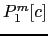, where 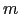 is the m-best value being considered and
 is the current segment).
is the current segment).
The transition probability between two states is taken as the
inverse proportional to the distance between its delays. Given two
nodes,  and
and  at segments
at segments  and 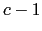, respectively, the
transition probability between them is
and 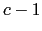, respectively, the
transition probability between them is
where
 . This way all transition
probabilities as locally bounded between 0 and 1, assigning a 0
probability to the furthest away delays pair.
. This way all transition
probabilities as locally bounded between 0 and 1, assigning a 0
probability to the furthest away delays pair.
This first Viterbi level aims at finding the best two TDOA values that represent the meeting's speakers at any given time. By doing so it is considered that the system will be able to choose the most appropriate/stable TDOA for that segment and a secondary delay, which can come from interfering events, other speakers or the same speaker's echoes. Such TDOA values are any two (not allowing the paths to collapse) of the M-best computed previously by the system, and are chosen exclusively based on their distance to surrounding TDOA values and their GCC-PHAT values.
The second level Viterbi decoding finds the best possible path
given the set of hidden states generated by all possible
combinations of delays from the 2-best delays obtained earlier for
each channel. Given the vector of dimension  (same as the
number of channels for which TDOA values are computed) describing
for each channel which TDOA value is being used
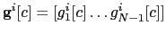 with each
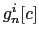
indicating the
(same as the
number of channels for which TDOA values are computed) describing
for each channel which TDOA value is being used
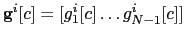 with each
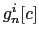
indicating the  position among the 2-best list of TDOA values
considered for channel
position among the 2-best list of TDOA values
considered for channel  at segment
at segment  . Given also that any
given
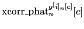 value (the
GCC-PHAT value associated to the
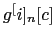-best TDOA value
for channel
. Given also that any
given
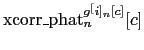 value (the
GCC-PHAT value associated to the
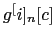-best TDOA value
for channel  at segment
at segment  ) will take values 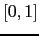, the
emission probabilities are considered as the product of the
individual GCC-PHAT values of each considered TDOA combination
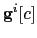 at segment
) will take values 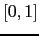, the
emission probabilities are considered as the product of the
individual GCC-PHAT values of each considered TDOA combination
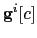 at segment  as
as
| 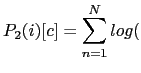xcorr |
(5.14) |
which can be considered as the extension of 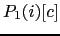
to the case of multiple TDOA values where we consider that the
different dimensions are independent from each other (interpreted
as independence of the TDOA values obtained for each channel at
segment  , not their relationship with each other in space along
time).
, not their relationship with each other in space along
time).
On the other hand, the transition probabilities are also computed
in a similar way as in the first step, but in this case they
introduce a new dimension to the computation, as now a vector of
TDOA values needs to be taken into accound. As it was done with
the emission probabilities, the total distance is considered as
the sum of the individual distances from each element. Given
TDOA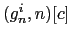 as the TDOA value for the
-best element in channel  for segment
for segment  , the
transition probability between TDOA position vectors
, the
transition probability between TDOA position vectors  and
and  is determined by
is determined by
| 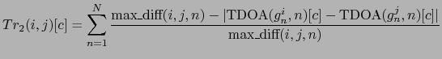 | (5.15) |
where now
 .
.
This second level of processing considers the relationship in space present between all channels, as they are presumably steering to the same point in space. By performing a decoding over time it selects the TDOA vector elements according to their distance to the vectors in its surroundings.
In both cases the transition probabilities are weighted to emphasize its effect in the decision of the best path in the same way as in the ASR systems (by product in the log domain). It will be shown in the experiments section that a value of weight 25 for both cases is what optimized the diarization error given the development set.
To illustrate how the two-step Viterbi decoding works on the TDOA values let us consider figure 5.6. It shows a situation where four microphones are used in a room where two speakers are talking to each other, with some overlap speech. There is also one or more noisy events of short duration and noise room in general, both represented by a ``noise'' source. Given one of the microphones as a reference, the delay to each of the other microphone is computed, resulting in delays from speech coming from either speaker ( 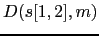) or from any of the noisy events (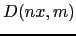) with 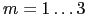.
For a particular segment the M-best TDOA values from the GCC-PHAT cross correlation function are computed. The first Viterbi step determines for each individual channel the 2-best paths across time for all the meeting. Figure 5.7 shows a possible Viterbi trellis for the first step for channel 1, where each column represents the M-best TDOA values computed for one segment. In this example four segments were considered where two speakers are overlapping each other, and there is also some eventual noisy events. For any given segment the Viterbi algorithm finds the two-best paths (forced not to overlap with each other) according to their distance of the delays to the chosen delays in the neighboring segments (transition probability) and to their cross-correlation values (emission probability). The resulting paths could be:
The third computed segment contains a noisy event that is well detected by channel 1 and the reference channel, and therefore it appears as the first in the M-best computed TDOA list. The effect of the Viterbi decoding can avoid selecting this event as its delay differs too much from the best delays in its surroundings and both speakers also appear with high correlation. On the other hand, the first and second segments contain the delays referring to the true speakers in the first and second-best positions, although alternated in both segments. This example illustrates a possible case where they cannot be correctly ordered and therefore there is a quick speaker change in the first and second-best delay paths in that segment.
The second step Viterbi decoding is intended to add an extra layer of robustness for the selection of the appropriate delays by considering all the possible delay combinations from all channels. Figure 5.8 shows the trellis formed by considering for each segment (in columns) all possible combinations of m-best delays ( 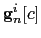) for the 3 channels case.
In this step only the best path is selected according to the overall combined distances and correlation values among all possible combinations. In this example the algorithm is able to solve the order mismatch from the previous step, selecting the delays relative to speaker 1 for all the segments. The current computes the 2-best path also in this step and output a signal steering at the two sets of TDOA values, although the diarization algorithm only use the first of them. In order to take advantage of the second (or more) delays steering at the overlap speakers in the meeting it is necessary to achieve some more progress in reliable speaker overlap detection algorithms, which remains as future work at the end of this thesis.
In the implementation of the second level Viterbi decoding a big
burden in computation time could be faced depending on the amount
of microphones to be processed. In the second level Viterbi the
amount of possible states for each instant  is defined by
is defined by
| 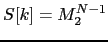 | (5.16) |
where 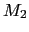 is the number of best TDOA values
extracted from the M-best values in the first Viterbi level (in
this implementation 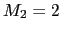). As the amount of states grows
exponentially when increasing  , it becomes computationally
prohibitive for meetings with 16 or more microphones available
(for 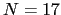, ,
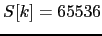). For a feasible
implementation, when 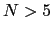 the pool of microphones are split is
blocks of 5 and the Viterbi is computed in each block
independently. This is a suboptimal solution as not all
microphones are used to optimize the delays and therefore it is
not certain that all blocks will converge to the same solution. It
is though much faster in processing time and it was not observed
to degrade the overall performance compared to using all
microphones together.
, it becomes computationally
prohibitive for meetings with 16 or more microphones available
(for 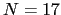, ,
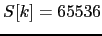). For a feasible
implementation, when 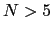 the pool of microphones are split is
blocks of 5 and the Viterbi is computed in each block
independently. This is a suboptimal solution as not all
microphones are used to optimize the delays and therefore it is
not certain that all blocks will converge to the same solution. It
is though much faster in processing time and it was not observed
to degrade the overall performance compared to using all
microphones together.
In conclusion, this newly-introduced double-Viterbi technique aims at finding a good tradeoff between reliability (cross-correlation) and stability (distance between contiguous delays). The second is cherished the most as the aim is to obtain an optimally improved signal, avoiding quick changes of the beamforming between acoustic events.
user 2008-12-08
![$\displaystyle Tr_1(i,j)[c] = \frac{\mbox{max\_diff}(i,j) - \vert\mbox{TDOA}_{i}[c] - \mbox{TDOA}_{j}[c-1]\vert}{ \mbox{max\_diff}(i,j) }$](img398.png)